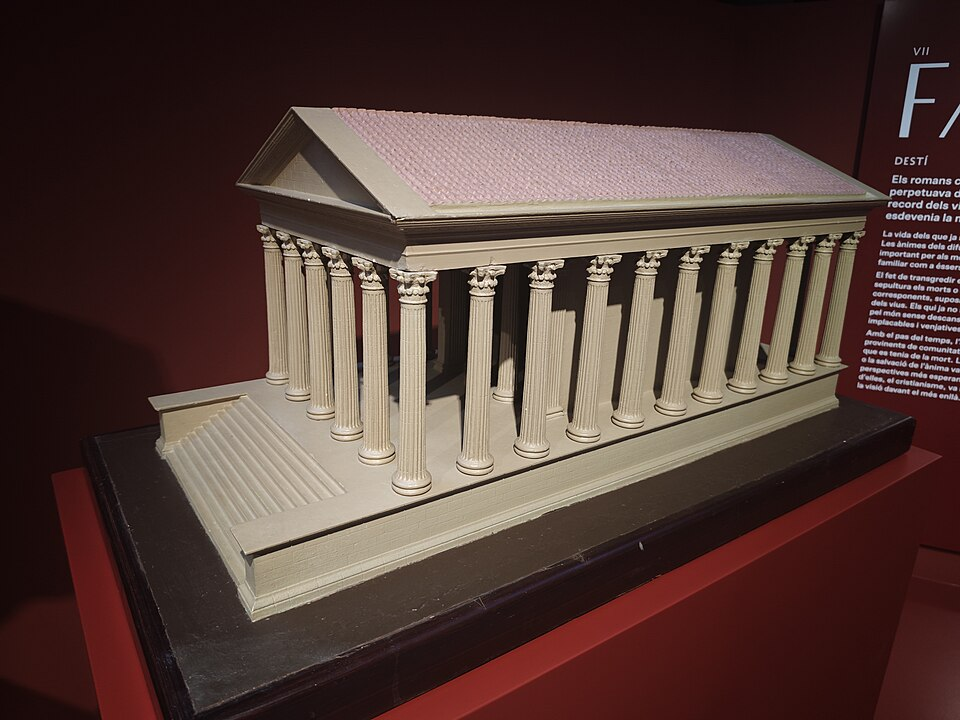
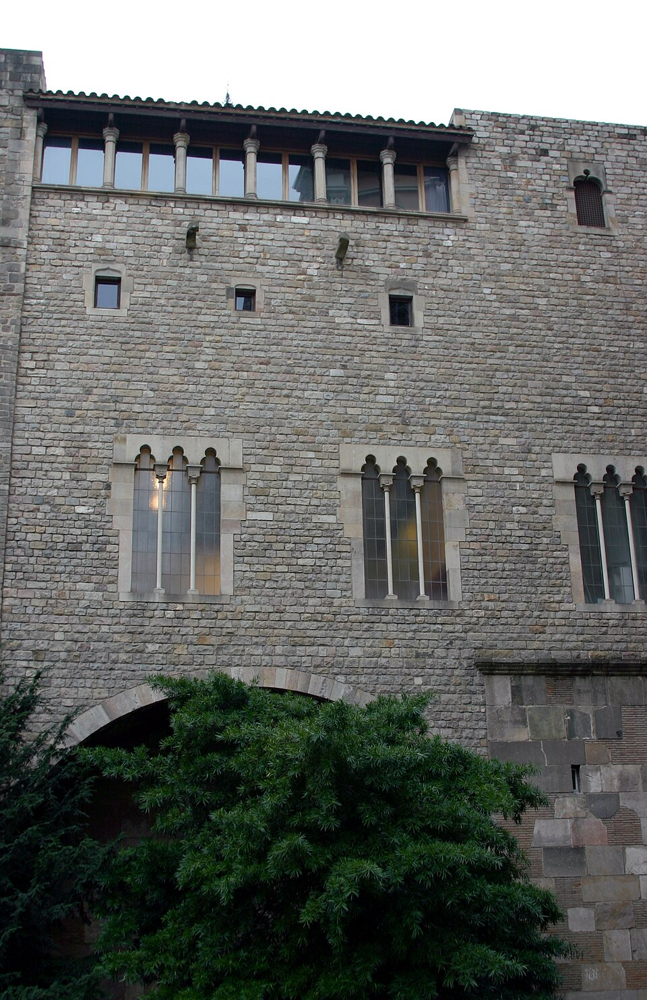

Els Segles
Vuit períodes clau que han donat forma a la Barcelona actual

Segle II a.C.
Fundació Romana
Els orígens de Bàrcino sota l'Imperi Romà i el naixement de la ciutat.
Saber més
Segle VIII d.C.
Conquesta Musulmana
Barshiluna sota el domini d'Al-Àndalus i la influència islàmica.
Saber més
Segle XII d.C.
Comtat de Barcelona
La consolidació del Comtat i el naixement de la Corona d'Aragó.
Saber més

Segle XVIII d.C.
Guerra de Successió
L'impacte de la Guerra de Successió i els Decrets de Nova Planta.
Saber més
Segle XIX d.C.
Revolució Industrial
La transformació amb la Revolució Industrial i l'Eixample de Cerdà.
Saber més
Segle XX d.C.
Modernisme i Jocs Olímpics
Del Modernisme als Jocs Olímpics del 92: una ciutat reinventada.
Saber més